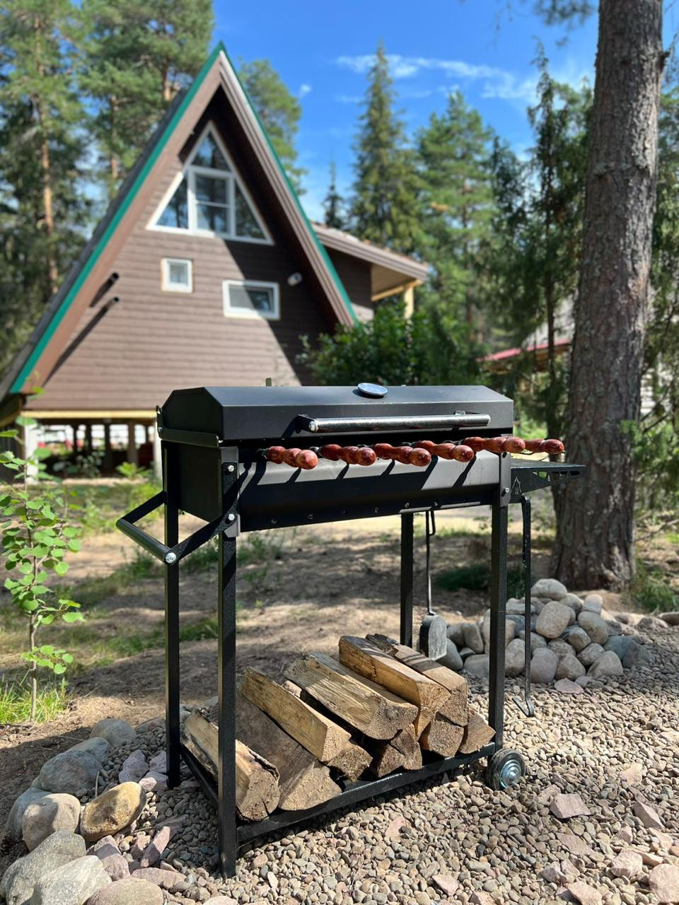
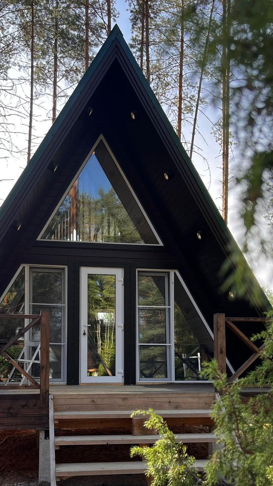
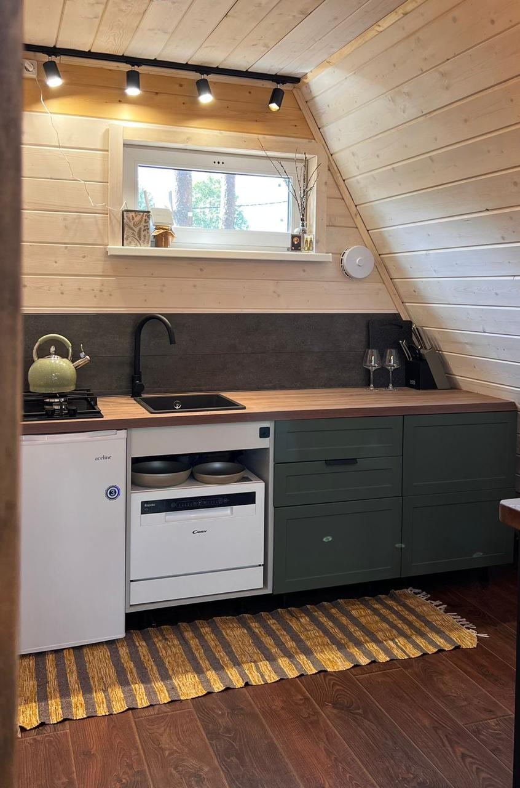
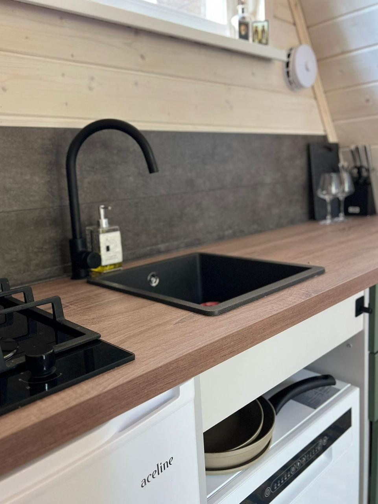
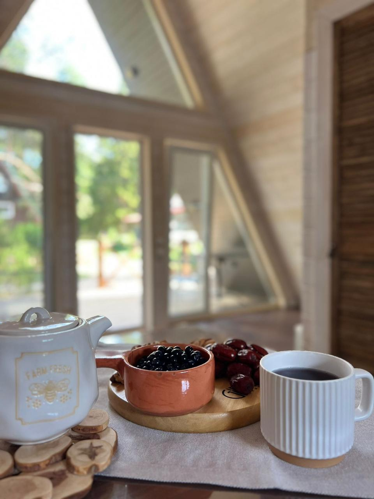

Уютный домик-треугольник в окружении хвойного леса на святой земле преподобного Александра Свирского. Тишина, природа и умиротворение.
Забронировать Подробнее о доме
В окружении чистейшего хвойного леса вы сможете набраться сил и здоровья, насладиться пением птиц, посвятить себя прогулкам по экотропам и молитве.
Домик оборудован всем необходимым для комфортного пребывания: уютная двуспальная кровать, раскладной диван, полностью укомплектованная кухня и современный санузел.
Наша цель — помочь вам отдохнуть от шумных городов, насладиться природой свирского заповедника и достичь состояния внутреннего умиротворения.
Все удобстваВсё продумано для вашего идеального отдыха на природе
Wi-Fi покрывает всю территорию гостевых домов.
Качественное постельное бельё, полотенца и косметика.
Встречаем гостей приятным набором продуктов.
По предварительному согласованию.
Зона для барбекю прямо возле дома.
Вкусные блюда из ресторана в удобное время.
Бесплатная частная парковка на территории.
Администратор быстро решит любой вопрос.
Множество интересных мест в пешей доступности и недалеко на машине
Загляните в наш уютный домик и его окрестности




Мы развиваемся! В этой живописной местности скоро появятся новые уютные домики «Свирские крыши». Следите за обновлениями.
С видом на живописную лесную чащу.
Уединённое место для полного релакса.
Забронируйте домик на краю леса прямо сейчас
Связаться с хозяйкой